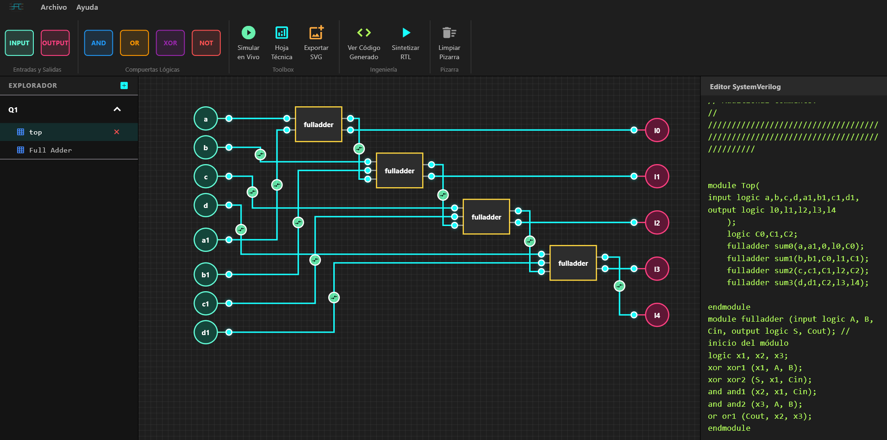

ARCLAB STUDIO
Diseña. Visualiza. Genera.
Una herramienta para diseñar circuitos digitales, máquinas de estado y lógica RTL desde una única interfaz.
V 1.3.3 • Alpha Release

Todo lo que necesitas para diseñar sistemas digitales
ArcLab reúne las principales herramientas utilizadas durante el diseño de sistemas digitales en un único entorno visual, reduciendo la necesidad de alternar entre diferentes programas.
Características principales
◇ Esquemáticos
Diseña circuitos utilizando compuertas lógicas, módulos y registros mediante una interfaz visual e intuitiva.
◇ Máquinas de Estado
Construye máquinas de Moore y Mealy y visualiza sus estados y transiciones en tiempo real.
◇ RTL / SystemVerilog
Genera código SystemVerilog estructurado desde tus diseños o convierte RTL en diagramas lógicos.
Del diseño al código
Un flujo de trabajo pensado para sistemas digitales.
Diseña
Visualiza
Genera RTL
Implementa
Herramientas integradas
Álgebra Booleana
Simplificación paso a paso mediante axiomas del álgebra de Boole y exportación a LaTeX.
Diagramas de Tiempo
Analiza ticks y señales para estudiar y depurar circuitos secuenciales.
Exportación
Genera imágenes de tus diseños listas para incorporar en informes y documentación.
Diseñado para aprender sistemas digitales
Desde los primeros circuitos combinacionales hasta máquinas de estado y diseños RTL, ArcLab busca reunir en un solo entorno las herramientas necesarias para estudiar y desarrollar sistemas digitales.
ARCLAB STUDIO
¿Listo para diseñar?
Descarga ArcLab y comienza tu próximo proyecto digital.
Descargar ArcLabV 1.3.3 • Alpha Release